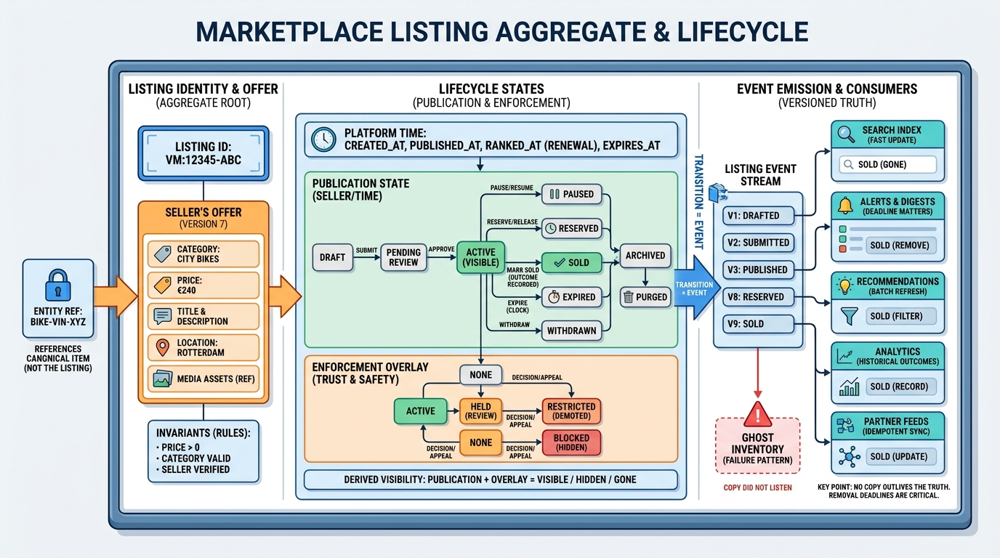

Part II — LISTING: Modeling the Thing Being Sold
The Listing Aggregate: Identity, Lifecycle and Invariants

Image generated by Google Gemini (gemini-3-pro-image-preview)
Part II — LISTING: Modeling the Thing Being Sold

Image generated by Google Gemini (gemini-3-pro-image-preview)